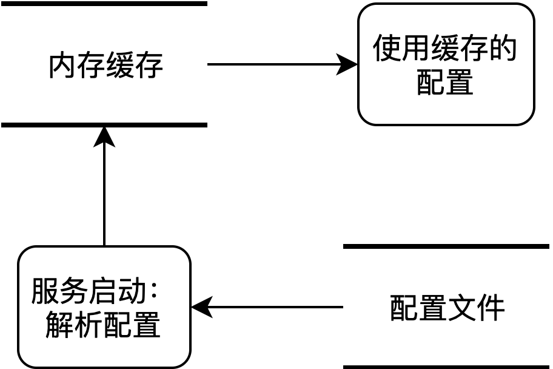
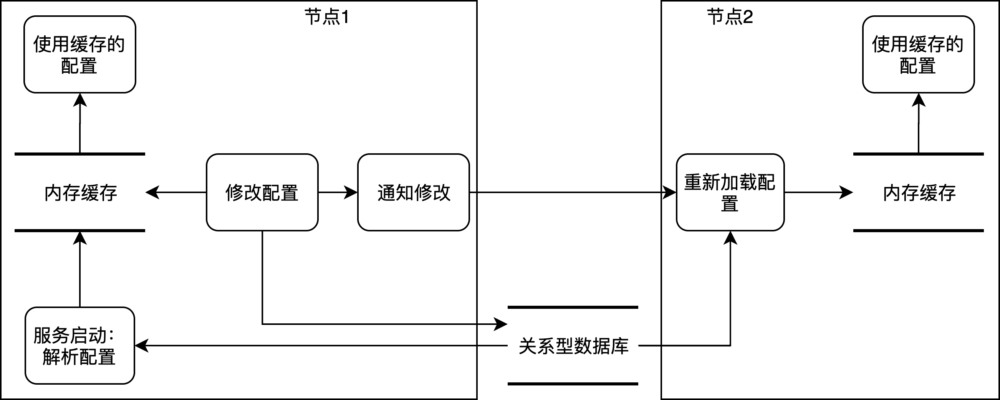
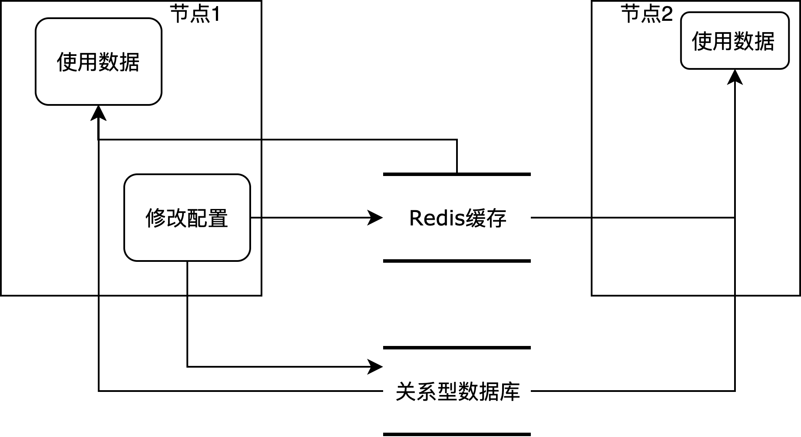

1. 前言
响应速度是影响在线服务体验的重要指标，业务调用量越高的服务对响应速度要求越苛刻。响应速度的瓶颈大多出现在网络、磁盘、关系型数据库，提升速度的方向无非是将需要的数据提前存放到内存、内存型数据库。本文介绍集群模式下的两种缓存方式，以及对应的经验。
2. 基于内存的缓存
2.1 只读配置
对于无需修改的配置，使用内存缓存可减少磁盘I/O进而提高响应速度，并且无需依赖外部组件和系统资源。原理如下图所示：
- 服务启动时解析配置文件；
- 解析的配置存入内存作为缓存，多使用Map数据结构；
- 配置项以单例全局变量的形式供整个服务进程使用，服务只读取该缓存，不修改缓存（修改后与配置文件不一致）；

2.2 可写配置
配置文件无法承载可修改的配置项，实践中我们同样使用内存作为缓存提高读取速度，多以持久化的数据库（MySQL、PostgreSQL、MongoDB）存储配置，以支持配置的修改，多个节点间使用消息队列（Kafka）通知集群中其他节点。
这种方式适用于读多写少的数据，比如系统的控制项、功能开关等，在大多数情况需要高性能的读取该数据，在紧急情况可以在线修改某些配置项达到需求，而不需要修改配置后重新部署服务。此方式原理如下图所示：
- 服务启动时读取数据库，解析配置；
- 数据库中未配置数据时，程序生成默认可执行配置项（搭建新环境时可以简化搭建步骤）；
- 解析的配置存入内存作为缓存，多使用Map数据结构，数据结构的读写需要并发保护；
- 配置项以单例的形式使用，多为功能模块内使用；
- 提供接口修改配置项，接收到修改请求的节点A同时修改数据库、缓存；
- 配置项修改完成后，节点A通过消息队列通知其他节点B；
- 节点B接收到配置修改的消息后，从数据库中重新加载修改的配置项；
- 节点B使用新的缓存提供服务。

3. 基于内存数据库的缓存
本文的内存数据库指Redis，其他内存数据库原理相似。内存数据库可提供快速的I/O，进而提升数据的读取效率。使用内存数据库后，集群内的所有节点可以共享缓存数据，因此可省略缓存修改同步的过程，降低程序的复杂度。内存数据库只作为缓存，读取失败、写入失败都不应该影响功能，而应降级为访问底层关系型数据库。使用内存数据库做缓存的原理如下图所示：
- 读取时，优先尝试从缓存读取数据；
- 如果数据不存在或缓存服务不可达，不返回错误，而是降级从数据库读取数据，并尝试存入缓存；
- 修改时，同时修改缓存和数据库，缓存服务不可达时不报错。
- 数据库中也不存在的数据，可在缓存中记录标记，用于区分缓存不存在和数据不存在，防止该类型数据的访问总是尝试查询数据库。

4. 前言
| 方法 | 在线修改 | 依赖 |
|---|---|---|
| 只读内存缓存 | 不支持 | 无 |
| 可写内存缓存 | 多节点存在延迟 | 消息队列、数据库 |
| 内存数据库缓存 | 实时 | 内存数据库集群 |
赏
使用支付宝打赏
使用微信打赏
若你觉得我的文章对你有帮助，欢迎点击上方按钮对我打赏
扫描二维码，分享此文章